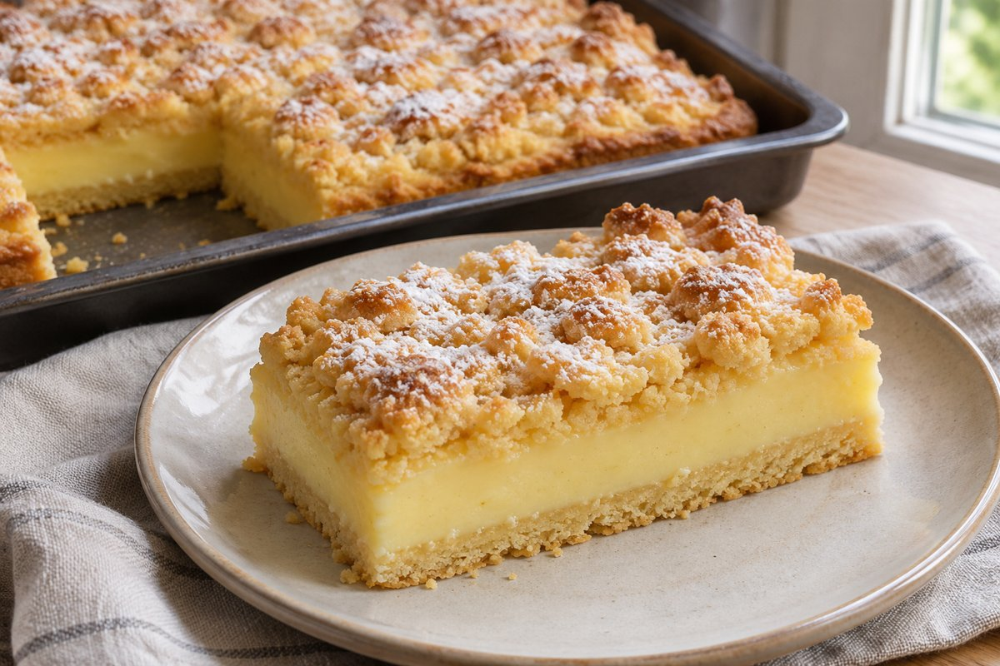

Cremiger Pudding-Streuselkuchen vom Blech

Mürbeteigkuchen mit cremiger Vanillepuddingfüllung, goldbraunen Streuseln und Puderzucker für eine Form von ca. 24 × 35 cm.
Ca. 15–18 Stücke · Form ca. 24 × 35 cm
Vorbereitung: ca. 25 Minuten · Teig kühlen: ca. 30 Minuten · Backen: ca. 40–45 Minuten bei 180 °C Ober-/Unterhitze · Anschließend vollständig auskühlen lassen
Zutaten
Für den Teig und die Streusel
- 400 g Weizenmehl Type 405
- 200 g kalte Butter
- 100 g Zucker für den Teig
- 2 Eier (Größe M)
- 2 TL Backpulver
- 1 Päckchen Vanillezucker
- 1 Prise Salz
Für die Puddingfüllung
- 750 ml Milch
- 2 Päckchen Vanillepuddingpulver zum Kochen (je ca. 37 g)
- 60 g Zucker für die Puddingfüllung
Außerdem
- Puderzucker zum Bestäuben
- Etwas Butter für die Backform
Zubereitung
- Mehl, Backpulver, Zucker, Vanillezucker und Salz vermischen.
- Kalte Butterwürfel und Eier hinzufügen, alles zügig zu einem Mürbeteig verkneten.
- Zwei Drittel für den Boden und ein Drittel für die Streusel abteilen. Beide Portionen ca. 30 Minuten kalt stellen.
- Form (ca. 24 × 35 cm) mit Backpapier auslegen, Backofen auf 180 °C Ober-/Unterhitze vorheizen.
- Etwa 150 ml Milch mit Puddingpulver und 60 g Zucker glatt rühren.
- Restliche Milch aufkochen, Puddingmischung einrühren und unter Rühren etwa 1 Minute kochen lassen, bis sie dick wird.
- Größere Teigportion gleichmäßig auf dem Formboden andrücken.
- Warmen Vanillepudding darüber verteilen und glatt streichen.
- Restliche Teigportion zu Streuseln zerbröseln und darüber verteilen.
- Auf mittlerer Schiene bei 180 °C ca. 40–45 Minuten backen, bis die Streusel goldbraun sind.
- Vollständig auskühlen lassen; für besonders saubere Stücke noch ca. 1 Stunde kalt stellen.
- Mit Puderzucker bestäuben und in Stücke schneiden.
Backtipp aus der Quelle: Mürbeteig nicht zu lange kneten. Pudding darf beim Verteilen noch warm sein; Kuchen vor dem Anschneiden vollständig auskühlen lassen.
Hinweise zur Quelle
Rezept nach den bereitgestellten Screenshots des Kommentars von @omas_rezeptee. Vorbereitung: ca. 25 Minuten. Kühlzeit für den Teig: ca. 30 Minuten. Backzeit: ca. 40–45 Minuten. Anschließend vollständig auskühlen lassen; für besonders saubere Stücke zusätzlich ca. 1 Stunde kalt stellen. Eine Gesamtzeit ist nicht angegeben und wurde wegen der unbestimmten Auskühlzeit nicht berechnet. Der Backzeitbereich bleibt im Text erhalten; daraus wurde kein einzelner strukturierter Zeitwert abgeleitet. Butter für die Backform ist in der Zutatenliste genannt; der Zubereitungstext sieht Backpapier vor.
Originalquelle: Instagram-Beitrag von omas_rezeptee.